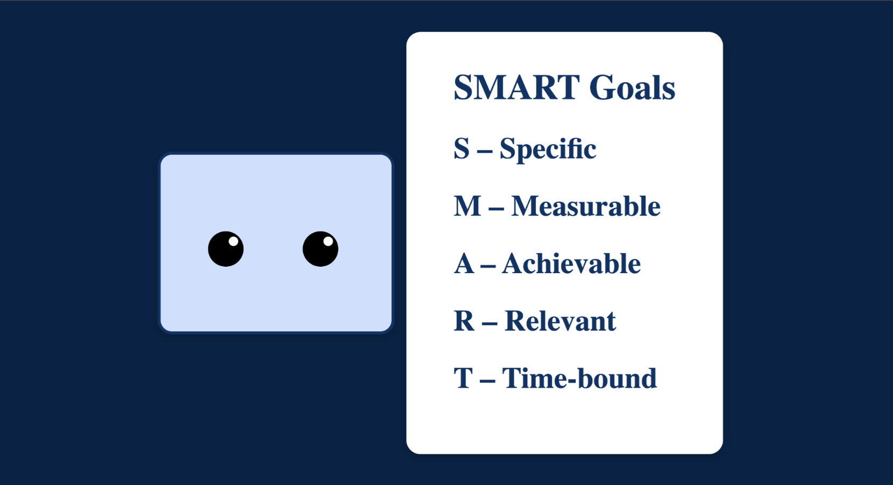
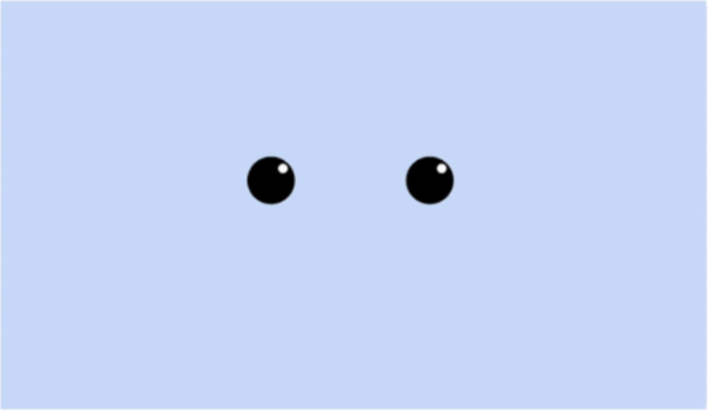
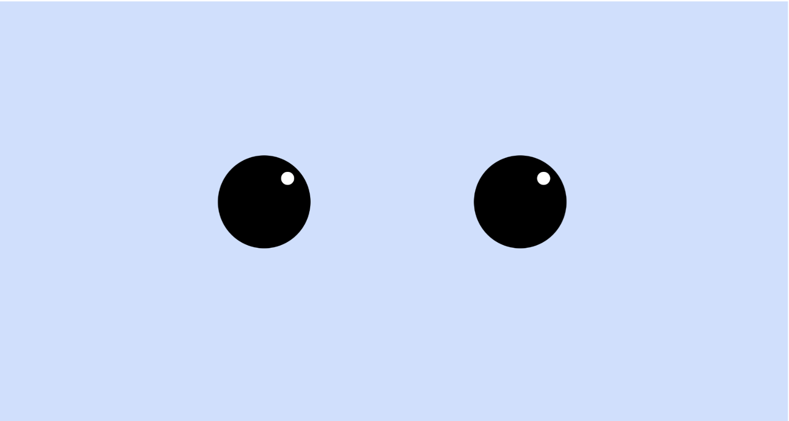
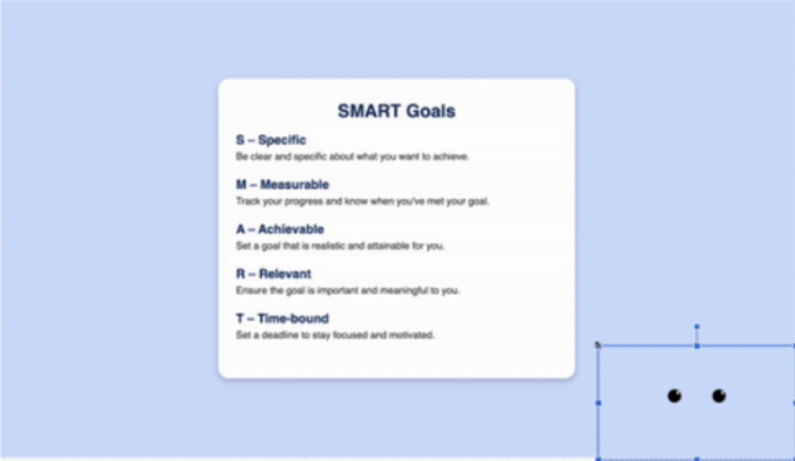

HRI Lab Interface Redesign
Role: Research Assistant (UI/UX & Front-End Lead)
Timeline: June 2025 (2-week sprint)
While working as a lab assistant in human-robot interaction (HRI) experiments, I noticed the robot's interface could be improved to increase participant comfort. I volunteered to redesign and develop the HTML-based face animations and UI screens for the Temi robot to create a more approachable, intuitive, and less cognitively demanding experience.



Anthropomorphic Refinements
To make Temi appear friendlier and more approachable, I increased the scale of the eyes on the face screen. I also completely reworked the CSS blinking animation, slowing it down to mimic a more natural, fluid human blink rather than a robotic flicker.
Reducing Cognitive Load
The original Smart Goals screen suffered from low contrast and visual clutter. I implemented a darker background to build high contrast, clearly separating the background entity from Temi's own color palette. By centering Temi alongside the goals, the visual hierarchy clearly establishes that Temi is the one explaining the concepts.
Applying cognitive science principles, I removed excess text from the screen and utilized a cleaner, more scholarly font. This forces participants to glance at the acronym and then actively listen to Temi's explanations, rather than getting distracted by reading heavy blocks of text.
